A hűségprogram jéghegye
Az adatok szintetikusak (demó dashboard).
-
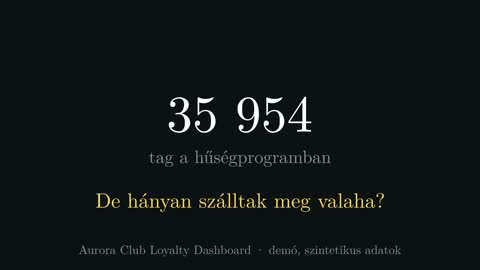
1. 0:00 Noémi
Harminchatezer tag, de hányan jönnek?
Egy szállodalánc büszkén jelenti: közel harminchatezer tagja van a hűségprogramnak. Jól hangzik. De hányan szálltak meg közülük valaha? Ez a videó egy demó adathalmazon mutatja meg, mi rejlik egy ilyen szám mögött.
-
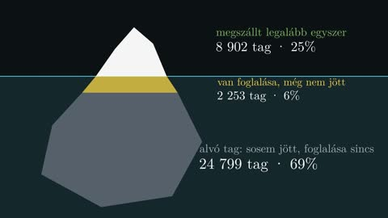
2. 0:19 Tamás
A jéghegy: aktív, foglaló, alvó
A tagoknak csak a negyede, nyolcezer-kilencszázkét ember szállt meg legalább egyszer. Hat százaléknak van foglalása, de még nem érkezett meg. A többi, közel hetven százalék, alvó tag: beiratkozott, de soha nem jött el, és foglalása sincs. Ez a hűségprogram jéghegye: a látható rész kicsi, a nagy tömeg a víz alatt van.
-
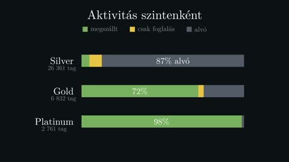
3. 0:43 Noémi
Szintenként: Silver, Gold, Platinum
Nézzük szintenként. A Silver tagok közel kilencven százaléka alvó. A Gold tagok több mint kétharmada megszállt már. A Platinum tagoknál szinte mindenki. A magasabb szint itt valódi aktivitást jelent.
-
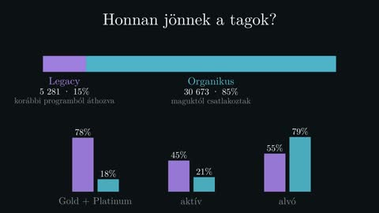
4. 1:01 Tamás
Legacy és organikus tagok
A tagság két forrásból jön. A Legacy tagokat egy korábbi programból hozták át, az organikus tagok maguktól csatlakoztak. A Legacy tagok hetvennyolc százaléka Gold vagy Platinum, és majdnem a fele aktív. Az organikus tagoknál ez tizennyolc és huszonegy százalék. Az új belépők nagy része tehát feliratkozott, de még nem jött el.
-
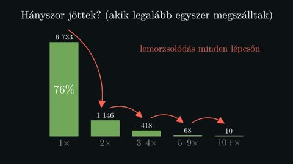
5. 1:26 Noémi
Hányszor jönnek vissza?
Most nézzük azokat, akik legalább egyszer megszálltak. Közülük hatezer-hétszázharminchárman pontosan egyszer jöttek. Kétszer már csak ezerszáznegyvenhatan, három-négyszer négyszáztizennyolcan. Minden lépcsőfokon a vendégek nagy része lemorzsolódik.
-
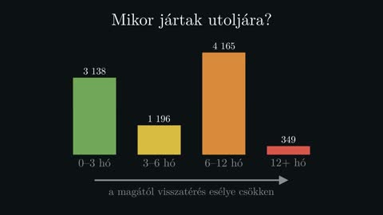
6. 1:48 Tamás
Mikor jártak utoljára?
És mikor jártak utoljára? Háromezer-százharmincnyolc vendég az elmúlt három hónapban. Négyezer-százhatvanöt viszont hat és tizenkét hónap között. Minél régebben járt valaki, annál kisebb az esély, hogy magától visszatér.
-
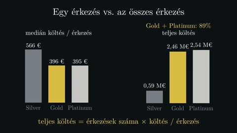
7. 2:06 Noémi
Medián és teljes költés
Itt jön egy meglepetés. Egy érkezés medián költése a Silver tagoknál ötszázhatvanhat euró, a Gold és Platinum tagoknál csak háromszázkilencvenöt körül. Közben a teljes költés közel kilencven százaléka Gold és Platinum tagoktól jön. Ez nem ellentmondás. A medián egyetlen érkezést ír le, az összeg viszont azt, hogy hányszor jönnek. A magas szintű tagok kisebb tételekben, de sokkal gyakrabban költenek.
-
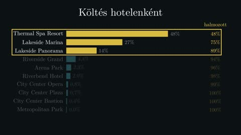
8. 2:39 Tamás
Hotelek szerinti koncentráció
A költés hotelek szerint is nagyon egyenlőtlen. A Thermal Spa Resort egymaga a teljes költés negyvennyolc százalékát hozza. Az első három hotel együtt közel kilencven százalékot. A többi hét hotel a hűségprogram szempontjából szinte láthatatlan.
-
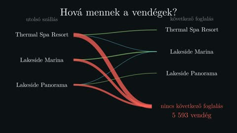
9. 2:58 Noémi
Hová mennek a vendégek?
Hová mennek a vendégek a legutóbbi szállásuk után? Akinek van következő foglalása, az legtöbbször ugyanabba a hotelbe tér vissza. A legvastagabb nyilak viszont nem egy másik hotelbe mutatnak, hanem a semmibe: ezeknek a vendégeknek nincs következő foglalásuk.
-
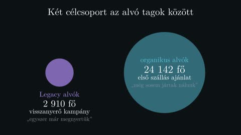
10. 3:19 Tamás
Két célcsoport
Mit kezdjünk ezzel? Két célcsoport rajzolódik ki. Az alvó Legacy tagoknál, kétezer-kilencszáztíz embernél, visszanyerő kampány kell: őket egyszer már megnyertük. A huszonnégyezer alvó organikus tagnál első szállásra szóló ajánlat: őket még soha nem láttuk vendégként.
-
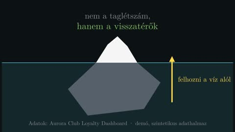
11. 3:41 Noémi
A tanulság
A tanulság: egy hűségprogram értékét nem a taglétszám adja, hanem az, hogy hányan jönnek vissza. A nagy szám a jéghegy teljes mérete, de az érték a víz fölötti részben van. És abban, mennyit tudunk felhozni a víz alól. Az adatok szintetikusak, de ez a minta sok valódi hűségprogramban ismerős.
Döntési fák
A fát a kód tanítja (CART), az eredmények valódiak.
-
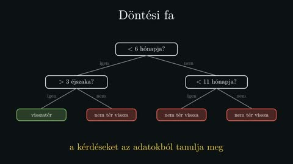
1. 0:00 Noémi
Kérdéssor, amelyet az adat tanít
Hogyan dönt egy szálloda, kinek küldjön ajánlatot? Gyakran egy egyszerű kérdéssorral: ha ez, akkor az. A döntési fa pontosan ilyen kérdéssor, csak a kérdéseket az adatokból tanulja meg.
-
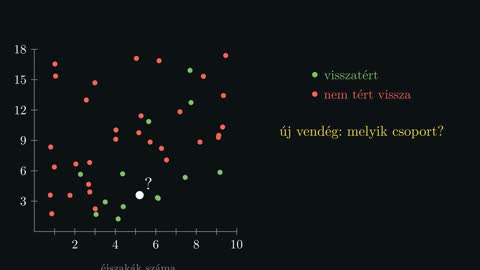
2. 0:17 Tamás
A példa: vendégek a síkon
Vegyünk egy példát. Minden pont egy vendég. A vízszintes tengelyen az eltöltött éjszakák száma, a függőlegesen az, hogy hány hónapja járt nálunk utoljára. A zöld pontok visszatértek, a pirosak nem. A cél: egy új vendégről megjósolni, melyik csoportba tartozik.
-
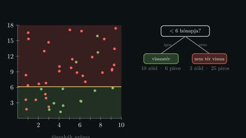
3. 0:39 Noémi
Az első vágás
A fa első kérdése egyetlen egyenes vágás. Például: kevesebb mint hat hónapja járt nálunk? A sík két részre esik. Mindkét oldalon tisztább lett a kép, de alul még keveredik a két szín.
-
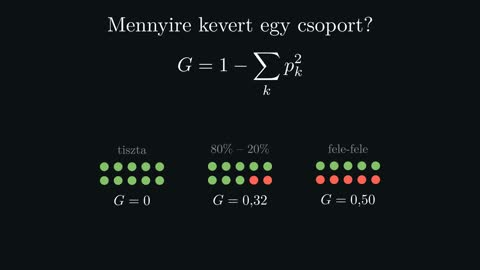
4. 0:57 Tamás
Gini-index: mennyire kevert egy csoport?
Honnan tudjuk, melyik vágás a legjobb? Mérni kell, mennyire kevert egy csoport. A Gini-index azt méri, mekkora eséllyel tévedünk, ha egy véletlen pontot a csoport arányai szerint, találomra címkézünk fel. Ha a csoport tiszta, nulla. Ha fele-fele arányú, akkor a legnagyobb: egy ketted.
-
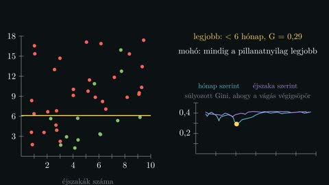
5. 1:20 Noémi
A legjobb vágás kiválasztása
A fa minden lehetséges vágást kipróbál, mindkét tengely mentén. Mindegyiknél kiszámolja a két oldal Gini-indexének súlyozott átlagát. Azt a vágást választja, amelyiknél ez a legkisebb. Ez egy mohó lépés: mindig a pillanatnyilag legjobbat választja.
-
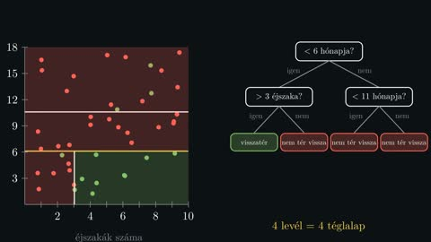
6. 1:43 Tamás
Ismétlés: a fa növekszik
Aztán ugyanezt megismétli mindkét részben, külön-külön. Minden új vágás egy új elágazás a fában. A sík egyre kisebb téglalapokra esik, és mindegyik téglalap egy-egy levél, egyetlen döntéssel.
-
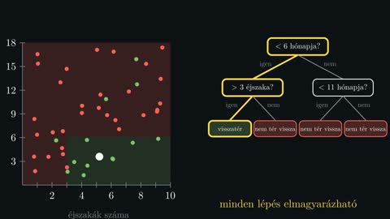
7. 1:58 Noémi
Döntés egy új vendégről
Egy új vendégnél egyszerűen végigmegyünk a fán. Kevesebb mint hat hónapja járt nálunk? Igen. Több mint három éjszakát töltött? Igen. Akkor valószínűleg visszatér. A döntés minden lépése érthető és elmagyarázható.
-
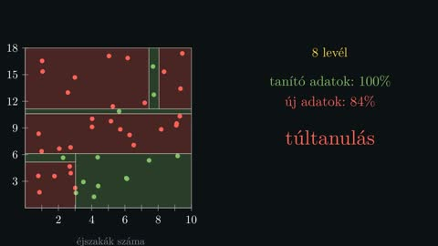
8. 2:22 Tamás
Túltanulás
Ha hagyjuk, a fa addig vág, amíg minden levél teljesen tiszta. Ilyenkor a véletlen zajra is külön szabályokat tanul. A tanító adatokon tökéletes, új adatokon viszont gyengébben teljesít, mint egy egyszerűbb fa. Ez a túltanulás.
-
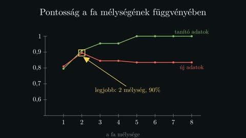
9. 2:40 Noémi
A fa visszafogása
A megoldás a fa visszafogása. Korlátozzuk a mélységét, vagy előírjuk, hogy egy levélben legalább hány pont legyen. Így a fa az általános mintát tanulja meg, nem az egyes pontokat.
-
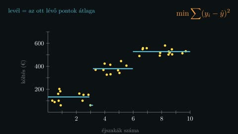
10. 2:57 Tamás
Ha számot kell jósolni: regressziós fa
És ha a fának egy számot kell megjósolnia, például a költést? Akkor a levél az ott lévő pontok átlagát adja vissza, és a vágást a hibák négyzetösszege alapján választjuk. Ugyanaz az ötlet, mint a legkisebb négyzetek módszerénél: lépcsős függvény a pontfelhőre.
-
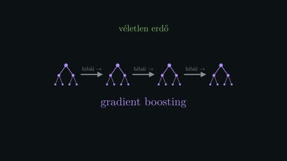
11. 3:16 Noémi
Véletlen erdő és gradient boosting
Egyetlen fa könnyen érthető, de érzékeny az adatokra. Ha sok fát építünk, mindegyiket kicsit más mintán, és szavaztatjuk őket, sokkal stabilabb előrejelzést kapunk. Ez a véletlen erdő. Ha pedig minden új fát az előzőek hibáinak javítására tanítunk, az a gradient boosting, az adatelemzés egyik legerősebb eszköze.
Hail Mary: idődilatáció, közérthetően
Képletek nélkül, laikus közönségnek.
-
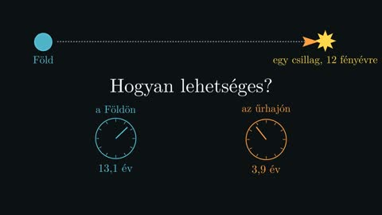
1. 0:00 Noémi
Tizenhárom év a Földön, négy a hajón
Képzelj el egy űrhajót, amely egy tizenkét fényévnyire lévő csillaghoz indul. Mire odaér, a Földön tizenhárom év telik el. Az űrhajósok viszont csak négy évet öregszenek. Ez nem tudományos-fantasztikus trükk, hanem valódi fizika. Nézzük meg, hogyan működik.
-
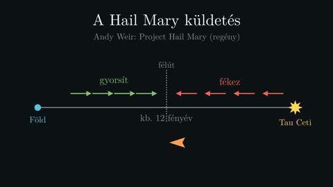
2. 0:23 Tamás
Az út a Tau Cetihez
Andy Weir regényében, a Héjl Méri című könyvben pontosan ez történik. A hajó a Tau Céti nevű csillaghoz utazik, közel tizenkét fényévre. Az út első felében folyamatosan gyorsít. Félúton megfordul, és a második felében fékez, hogy meg tudjon állni.
-
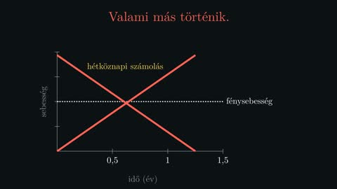
3. 0:43 Noémi
Gyorsabb a fénynél?
Ha a hajó egy évig gyorsítana ilyen ütemben, a hétköznapi számolás szerint gyorsabb lenne a fénynél. A valóságban ez nem történhet meg. Valami más történik.
-
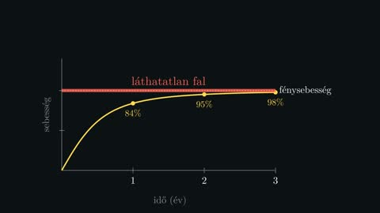
4. 0:59 Tamás
A láthatatlan fal
Minél gyorsabban megy a hajó, annál nehezebb még gyorsabbá tenni. A sebessége egyre közelebb kerül a fény sebességéhez, de soha nem éri el. Olyan, mintha egy láthatatlan fal állna előtte.
-
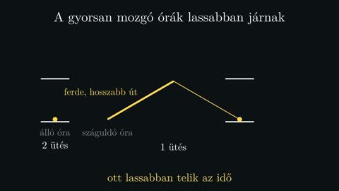
5. 1:14 Noémi
A fényóra: lassabban járó idő
És itt jön a meglepő rész: a gyorsan mozgó órák lassabban járnak. Képzelj el egy órát, amelyben egy fénysugár pattog két tükör között. Ha az óra száguld, a fénynek ferdén, hosszabb utat kell megtennie. Ugyanannyi idő alatt kevesebbet üt. Az idő ott lassabban telik.
-
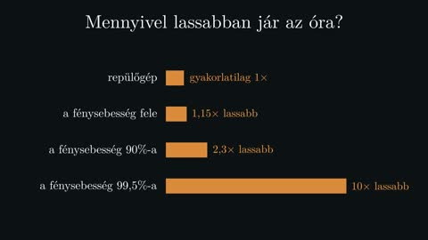
6. 1:38 Tamás
Mennyivel lassabban?
Mennyivel lassabban? Hétköznapi sebességeknél, még egy repülőgépen is, a különbség elhanyagolható. A fénysebesség felénél az óra már tizenöt százalékkal lassabb. Kilencven százaléknál kétszer lassabb. A fénysebesség kilencvenkilenc és fél százalékánál pedig tízszer.
-
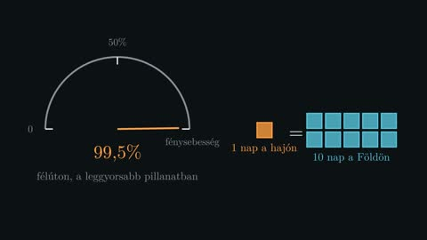
7. 2:00 Noémi
A leggyorsabb pillanat
A Héjl Méri félúton, a leggyorsabb pillanatában, a fénysebesség kilencvenkilenc és fél százalékával száguld. Ilyenkor egyetlen nap a fedélzeten tíz nap a Földön.
-
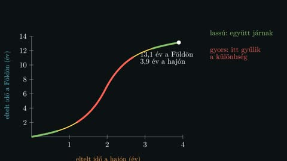
8. 2:15 Tamás
A két óra az út során
Kövessük végig a két órát. Az út elején és végén, amikor a hajó még lassú, szinte együtt járnak. A különbség az út közepén gyűlik össze, amikor a hajó a leggyorsabb. A végére a Földön tizenhárom év telik el, a hajón alig négy.
-
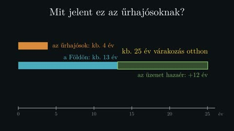
9. 2:33 Noémi
Mit jelent ez az űrhajósoknak?
Mit jelent ez az űrhajósoknak? Csak négy évet kell kibírniuk, ami emberi léptékkel elviselhető. A Földön viszont addigra tizenhárom év telik el, és ha üzenetet küldenek haza, az még majdnem tizenkét évig utazik. Aki otthon maradt, közel huszonöt évet vár a hírre.
-
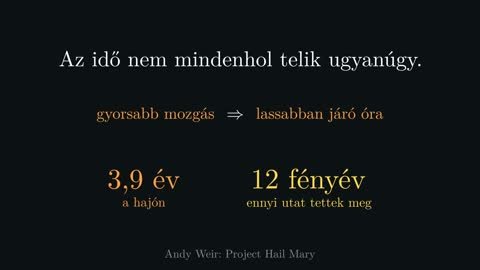
10. 2:57 Tamás
Összefoglalás
Összefoglalva: az idő nem mindenhol telik ugyanúgy. Minél gyorsabban mozog valami, annál lassabban jár az órája. A Héjl Méri legénysége ezt a saját bőrén tapasztalja meg: négy év alatt jutnak el oda, ahová a fénynek is tizenkét év kell.
Mi történik a kovászban?
A számok közelítő értékek és ökölszabályok.
-
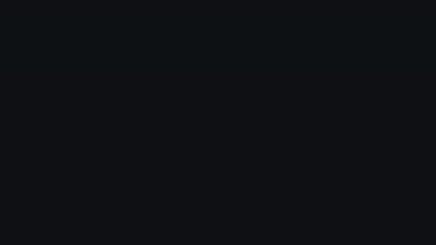
1. 0:00 Noémi
Bevezető
liszt + víz, a mikrovilág, a hőmérséklet mint kezelőgomb
Liszt, víz, és néhány nap várakozás. Élesztőt nem teszünk hozzá, mégis kenyér lesz belőle. Hogyan? A válasz egy apró ökoszisztéma, amely az üvegben él. És ennek az ökoszisztémának a legfontosabb kezelőgombja a hőmérséklet.
-
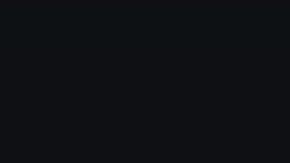
2. 0:21 Noémi
A lakók
~100:1 arány, méretkülönbség
Két fő lakója van: a tejsavbaktériumok és a vadélesztők. A baktériumok vannak sokkal többen: nagyjából száz baktérium jut egy élesztősejtre. Az élesztősejt viszont jóval nagyobb, ezért a kelésben mégis övé a főszerep.
-
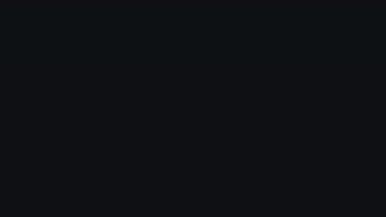
3. 0:39 Noémi
A liszt enzimjei
amiláz: keményítő → maltóz
De az első lépést nem ők teszik meg, hanem maga a liszt. Vízzel összekeverve felébrednek az enzimjei. Az amiláz a keményítő hosszú cukorláncait darabolja, és kettes egységeket, maltózt vág le róluk. Ez lesz a mikrobák fő tápláléka, mert szabad cukor alig van a lisztben.
-
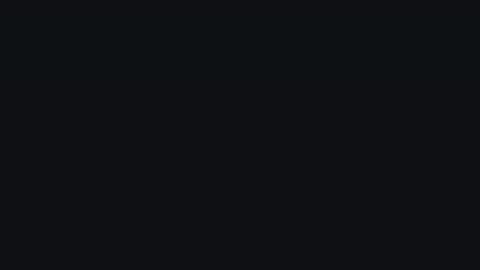
4. 1:02 Noémi
Munkamegosztás
a baktérium hasít, glükózt enged át az élesztőnek
És itt jön a legszebb rész: a munkamegosztás. A jellegzetes kovászélesztő a maltózt nem tudja bontani. A kovászbaktérium viszont igen: felvesz egy maltózt, kettéhasítja, az egyik felét felhasználja, a másikat, egy glükózt, kiengedi. Ezt pedig az élesztő már meg tudja enni. Nem versengenek, hanem egymásra épülnek.
-
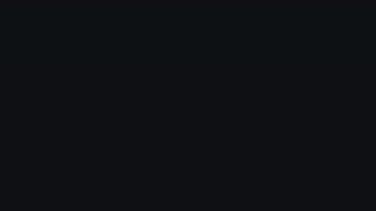
5. 1:30 Noémi
Termékek
tejsav, ecetsav, CO₂, alkohol; pH 6 → 4
Mit termelnek? A baktériumok tejsavat, egy részük ecetsavat is. A tejsav lágy, joghurtos savanyúságot ad, az ecetsav élesebbet. Az élesztők szén-dioxidot és alkoholt. A gáz felfújja a tésztát, a savak pedig lassan lenyomják a pH-t, nagyjából hatról négy környékére.
-
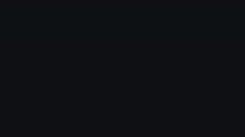
6. 1:55 Noémi
A sav mint kapcsoló
fitáz, proteázok, a romlást okozók visszaszorulása
A savasodás nem mellékhatás, hanem kapcsoló. Ahogy a pH esik, munkába állnak a liszt savkedvelő enzimjei. A fitáz felszabadítja az ásványi anyagokat. A proteázok a fehérjéket bontják, ezekből lesznek később az ízanyagok. A romlást okozó mikrobák viszont nem bírják a savat, és visszaszorulnak.
-
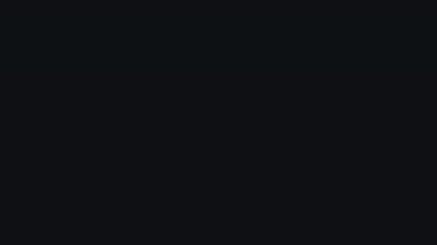
7. 2:21 Noémi
Az időbeli ív
térfogat és pH, csúcs, túlérés
Nézzük mindezt időben. Etetés után egy rövid csend, aztán gyors szaporodás. A térfogat nő, a pH esik. Egy ponton fogy a táplálék, a kovász eléri a csúcsát, majd visszaesik. Ha tovább hagyjuk, a proteázok a glutént is szétbontják: a tészta túlérik, szétfolyik.
-
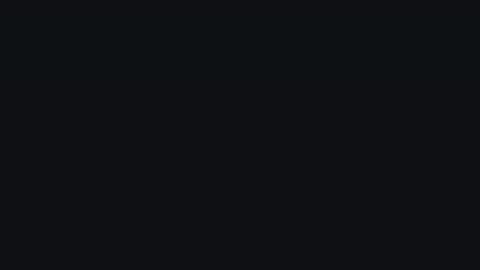
8. 2:46 Noémi
Hőmérséklet ①: sebesség
a görbe összenyomódik (+8–10 °C ≈ 2×)
És most a hőmérséklet. Az első hatása egyszerű: mindent gyorsít. Durva ökölszabályként nyolc-tíz fokkal melegebben a folyamat nagyjából kétszer olyan gyors. Ugyanaz a görbe melegben összenyomódik: hamarabb jön a csúcs, de hamarabb a túlérés is.
-
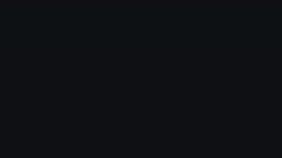
9. 3:07 Noémi
Hőmérséklet ②: egyensúly
baktérium- és élesztő-optimum, meleg / hűvös / hűtő
A második hatása finomabb: eltolja az egyensúlyt. A tejsavbaktériumok a meleget szeretik, harminc fok körül vannak elemükben, a kovászélesztők kicsit hűvösebben. Melegben ezért több sav képződik, főleg tejsav: kerekebb, lágyabb savanyúság. Hűvösebben lassabb a savasodás, de az ecetsav aránya nő, élesebb lesz az íz. A hűtő szinte megállítja az egészet, de a savak lassan tovább gyűlnek.
-
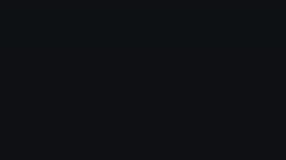
10. 3:40 Noémi
A sütőben
kemencerugás, pusztulás, csirizesedés, alkohol, Maillard
Végül a sütő. Az első percekben az élesztők még egy utolsót dolgoznak, a gázok kitágulnak: ez a kemencerugás. Ötven-hatvan fok körül a mikrobák elpusztulnak. Hatvan-hetven fok között a keményítő csirizesedik, és megszilárdul a bél. Az alkohol elpárolog. A bél belseje száz fok alatt marad, a héj viszont jóval forróbb lesz. Száznegyven fok fölött beindul a Maillard-reakció: a cukrok és aminosavak, amelyeket a kovász készített elő, barnulnak és aromává válnak.
-
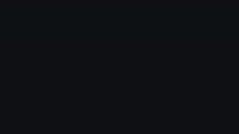
11. 4:19 Noémi
Összefoglaló
Összefoglalva: az enzimek bontanak, a baktériumok savanyítanak, az élesztők felfújnak, és mindegyik a másik munkájára épít. A hőmérséklet pedig két gombot tekert egyszerre: a sebességet és az egyensúlyt. Aki ezt a kettőt érti, az már nem receptet követ, hanem kovászt nevel.
A 3b1b-stílus, és hogyan készül
Két rész: a stílus (1–8.) és a készítés (9–14.).
-
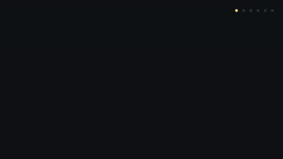
1. 0:00 Noémi
Bevezető
a felismerhető felszín és a hat döntés
Ha láttál már 3Blue1Brown-videót, valószínűleg azonnal felismered. Sötét háttér, lassan mozgó képletek, egy nyugodt hang. De mi az, ami ezt a stílust valóban működővé teszi? Nem a díszítés. Hat döntés, amelyek mind ugyanazt a célt szolgálják: hogy a néző maga jöjjön rá a dologra.
-
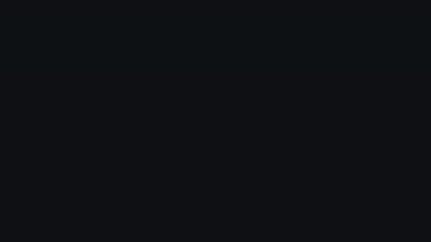
2. 0:25 Noémi
Kérdés a definíció előtt
Az első: a videó nem definícióval kezd, hanem kérdéssel. Mennyi egy plusz három plusz öt plusz hét? A definíció megmondja a választ. A kérdés viszont kíváncsivá tesz, és onnantól a néző velünk együtt keresi.
-
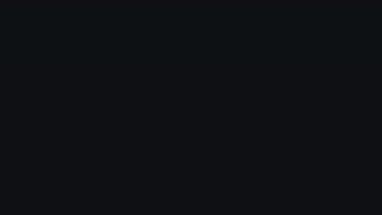
3. 0:45 Noémi
Példa az általánosítás előtt (páratlan számok → négyzet)
A második: előbb a konkrét példa, csak utána az általános szabály. Rakjuk ki a páratlan számokat pontokból. Egy pont. Hozzá három: kettőször kettes négyzet. Hozzá öt: háromszor hármas. Hozzá hét: négyszer négyes. Mire leírjuk a képletet, a néző már látta, hogy igaz.
-
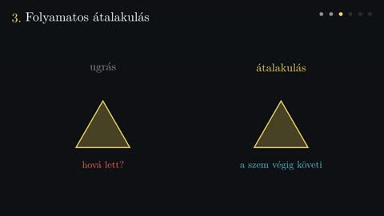
4. 1:13 Noémi
Folyamatos átalakulás (képlet és alakzat morfolása, ugrás vs. átalakulás)
A harmadik: semmi nem tűnik el és bukkan fel csak úgy. Ha egy képlet átalakul, a szem követi, melyik rész hová kerül. A négyzet nem lecserélődik körre, hanem átformálódik. Így a néző nem veszíti el a fonalat a lépések között.
-
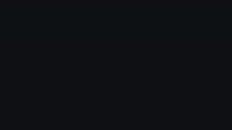
5. 1:33 Noémi
A szín jelentést hordoz ((a+b)² geometriailag)
A negyedik: a szín jelentést hordoz, nem díszít. Ha a kék jelöli az egyik mennyiséget, akkor végig kék marad, a rajzon és a képletben is. A sárga a másikat, a zöld a kettő szorzatát. A sötét háttér pedig azért van, hogy ez a kevés szín világítson.
-
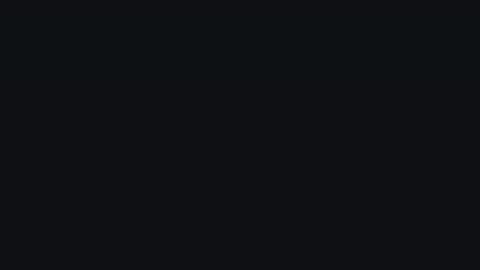
6. 1:56 Noémi
Egyszerre egy dolog (zsúfolt dia vs. fókusz)
Az ötödik: egyszerre csak egy dologra figyelünk. Egy zsúfolt dián minden egyszerre kiabál. Itt ami éppen nem fontos, az elhalványul, de nem tűnik el, hogy a kontextus megmaradjon. A képernyőn sosem több az információ, mint amennyit a hang épp elmond.
-
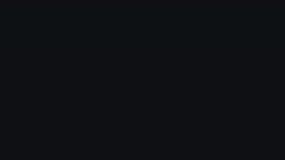
7. 2:18 Noémi
A kép a mondatot követi (hang-idővonal, szünet)
A hatodik: a kép a mondatot követi. Ami elhangzik, az abban a pillanatban jelenik meg. A fontos gondolat után pedig jön egy kis szünet. Ez nem üresjárat: ekkor rakja össze a néző, amit látott.
-
8. 2:35 Noémi
Összefoglaló
Összefoglalva: kérdés a definíció előtt, példa az általánosítás előtt, folyamatos átalakulás, jelentéssel bíró szín, egyszerre egy dolog, és a kép, ami a hangot követi. Egyik sem bonyolult. A stílus attól erős, hogy mind ugyanazt szolgálja: a megértést. Ez a videó is a Manimmel készült, azzal az animációs könyvtárral, amelyet Grant Sanderson eredetileg a saját videóihoz írt. Hogy pontosan hogyan, azt a második rész mutatja meg.
-
9. 3:11 Tamás
A folyamat: kód → Manim → kép, szöveg → edge-tts → hang, ffmpeg → végleges
Én pedig azt mutatom meg, hogyan készül egy ilyen videó. A folyamat két szálon fut. A kép Python-kódból készül, a Manim nevű könyvtárral. A hang szövegből, egy ingyenes felolvasóval. A kettőt végül az ffmpeg fűzi össze egyetlen videóvá.
-
10. 3:30 Tamás
Manim: a jelenet egy Python-osztály (kód és eredmény egymás mellett)
A Manimben minden jelenet egy Python-osztály. A construct metódusban leírjuk, mi jelenjen meg, a play paranccsal pedig azt, hogyan mozogjon. Ez a három sor létrehoz egy négyzetet, megrajzolja, majd körré alakítja. Nincs idővonal és nincs kézi kulcskocka: a mozgást a kód írja le, ezért pontosan megismételhető.
-
11. 3:52 Tamás
Képletek: LaTeX → dvi → SVG → külön alakzatok
A képletek LaTeX-ből jönnek. A Manim a képletet lefordíttatja a LaTeX-szel, az eredményt vektoros SVG-vé alakítja, és minden karakterből külön alakzat lesz. Ezért tud egy képlet darabjaiban átrendeződni: az x itt nem betű, hanem önálló objektum, amit meg lehet mozgatni és át lehet színezni.
-
12. 4:13 Tamás
Hang: edge-tts, a két magyar hang, jelenetenkénti fájlok
A hang az edge-tts nevű ingyenes eszközzel készül, amely a Microsoft Edge neurális felolvasóit használja. Nem kell hozzá regisztráció, sem API-kulcs. Magyarul két hang van: Noémi, akit az első részben hallottál, és Tamás, aki most beszél. A hang jelenetenként külön fájlba kerül, így egy mondat átírása után csak azt az egy részt kell újragenerálni.
-
13. 4:38 Tamás
Összerakás: kimerevítés vagy csend, majd concat
A kép és a hang ritkán pontosan egyforma hosszú. Az összerakó szkript ezért jelenetenként összeméri a kettőt. Ha a hang a hosszabb, a jelenet utolsó képkockája kimerevedik, amíg a mondat véget ér. Ha a kép, a hang végére csend kerül. Végül az ffmpeg a jeleneteket egyetlen fájllá fűzi.
-
14. 5:00 Tamás
Munkamódszer: külön renderelés, képkocka-ellenőrzés
És a munkamódszer. Minden jelenet külön renderelődik, így egy hiba javításához nem kell az egész videót újragyártani. Renderelés után képkockákat nézünk meg, mert az átfedések és a csúszások ott derülnek ki, nem a kódban. Ez a videó is így készült: nyolc meg hat jelenet, három szkript, és sok kis javítás.